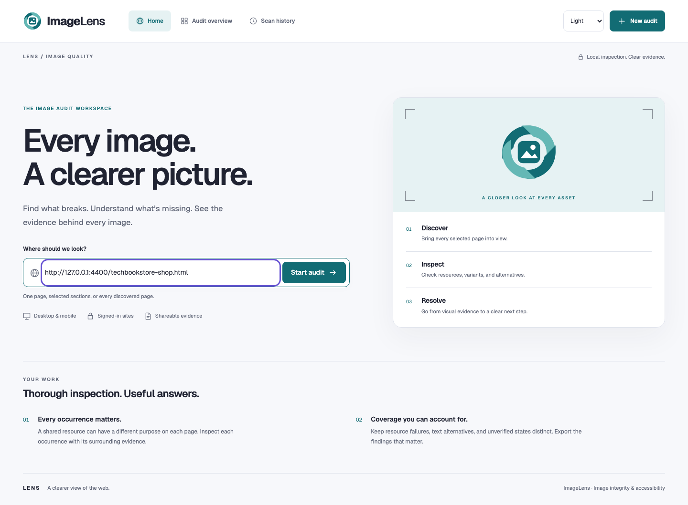
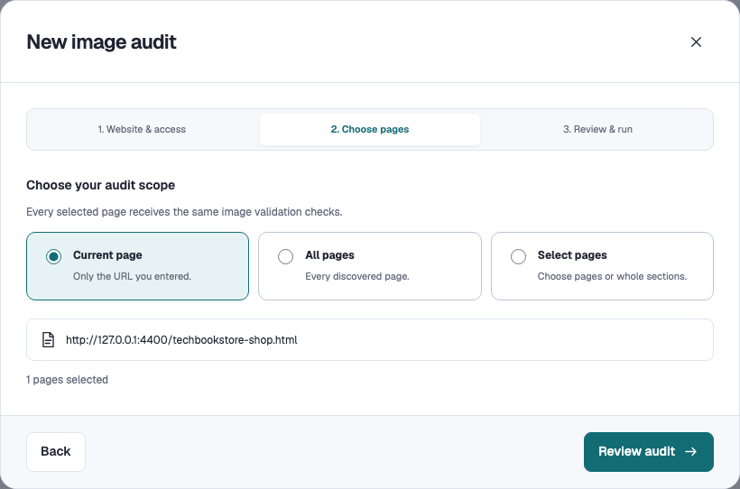
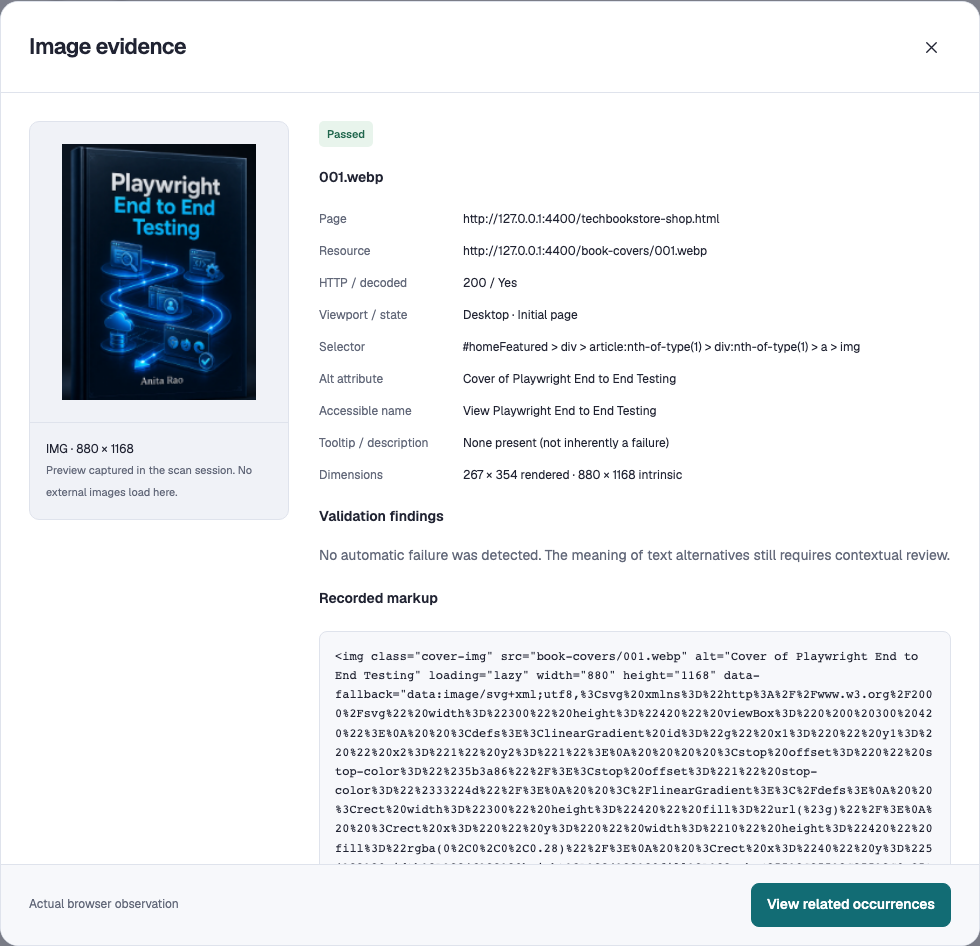
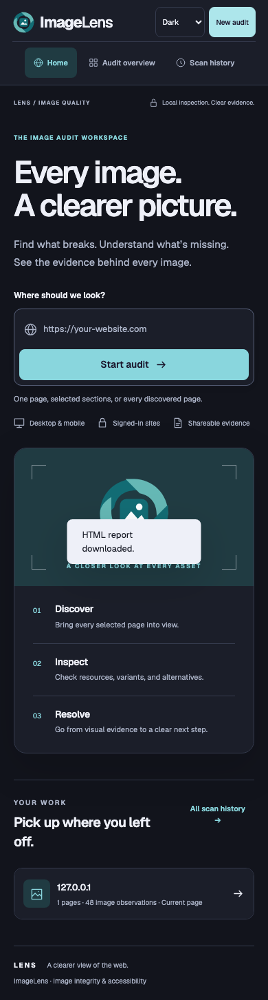

For Quality Engineers
Trace a failure to its page, viewport, resource, and recorded markup.
Broken resources are only part of the picture. Inspect text alternatives, responsive candidates, and the evidence behind an image’s behavior.
Explore the Walkthrough
A successful request doesn’t tell you whether an image has a useful text alternative, whether its mobile source works, or where the same problem appears again.
Trace a failure to its page, viewport, resource, and recorded markup.
Separate loading failures from text-alternative issues and contextual review.
Review image occurrences and share findings in a report that can be filtered.
Move through the actual application. These screenshots come from a fresh scan of a Tech Book Store public catalog, with seeded book images.

Choose the current page, all discovered pages, or a selected set. This example scans the Tech Book Store public catalog page in desktop and mobile viewports.
Use arrow keys on the step tabs, or Home and End. Screenshots open at full resolution. Tech Book Store: 48 image observations across desktop and mobile, all passing in this run. Automated passes do not establish accessibility conformance. This is seeded practice data, not customer results.
A missing resource can also lack an alternative. ImageLens retains overlapping findings so one label doesn’t hide another problem.

Inspect the page, viewport, element selector, loading evidence, and intrinsic dimensions together.
Review alt attributes, accessible names, and tooltip evidence. A tooltip-only alternative is flagged; a missing tooltip alone isn’t a failure.
A missing preview doesn’t prove a broken image. Cross-origin capture restrictions and unverified states need their own explanation.
Try category, issue type, page, and viewport filters in the actual exported HTML report. Expand the markup or download a filtered CSV.
The bundled report contains only the Tech Book Store catalog scan. It doesn’t connect to the scanner or make external requests.
The app supports System, Light, and Dark appearance, with responsive layouts. Compare the captured desktop views and explore the mobile home.

ImageLens combines a local browser scanner with a workflow for choosing scope, reviewing evidence, recovering from interruptions, and sharing results.
Node.js and Playwright drive Chromium. Checks include image loading and decoding, responsive candidates, lazy images, CSS backgrounds, inline SVG, and accessible frames.
Observations retain page, viewport, markup, and issue details. Small previews are captured where browser rules allow, without fetching target images from the dashboard.
Active scans reconnect after refresh. History merges across tabs. Storage failures produce a visible warning so a report can be exported before it is lost.
The ImageLens integration suite passed scanner fixtures, overlapping findings, responsive assets, basic authenticated-cookie scanning, cancellation, and HTML/CSV/JSON/PDF exports. Six recovery scenarios passed: scan refresh, two-tab history, full storage, temporary polling loss, cancellation before confirmation, and expired sign-in.
Recorded design checks passed both themes at desktop, phone, and landscape widths, keyboard report tabs, theme synchronization, and enlarged text. axe-core was used for UI testing, not as ImageLens’s image-scanning engine. These scoped checks do not establish accessibility conformance.
Discovery is bounded to 200 pages and follows same-site links. “All pages” means all discovered pages. Closed shadow roots, unsupported interactions, exhaustive carousel states, and the meaning of text alternatives still require review. Mobile scans are viewport checks, not physical-device tests.
History and report exports can contain page URLs, DOM evidence, and previews. Browser sign-in is supported in the local app, but this walkthrough does not provide a live scan or collect credentials.
{kind=link}
{kind=link}
{kind=link}
{kind=link}
{kind=link}
{kind=link}
{kind=link}
{kind=link}
{kind=link}
{kind=link}
{kind=link}
{kind=link}